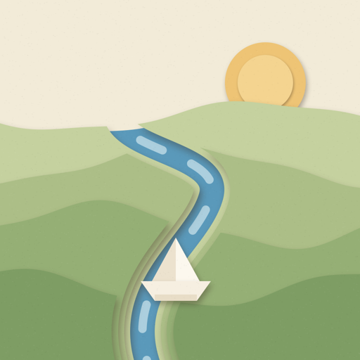
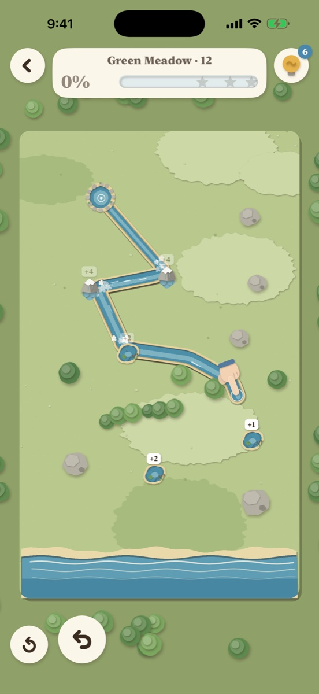
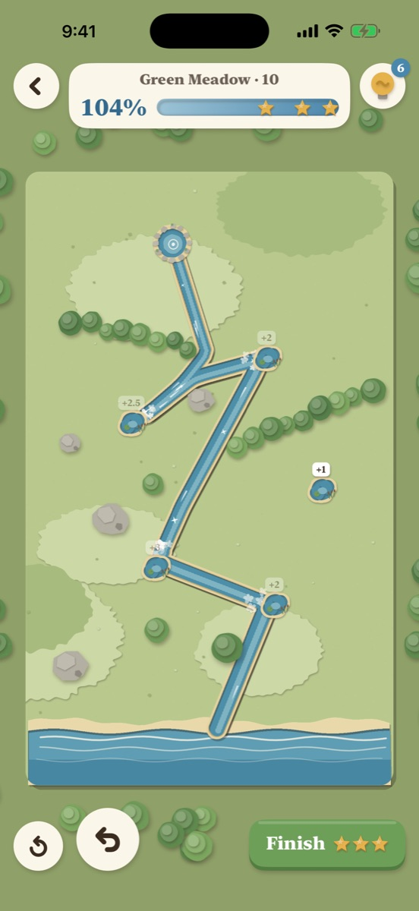
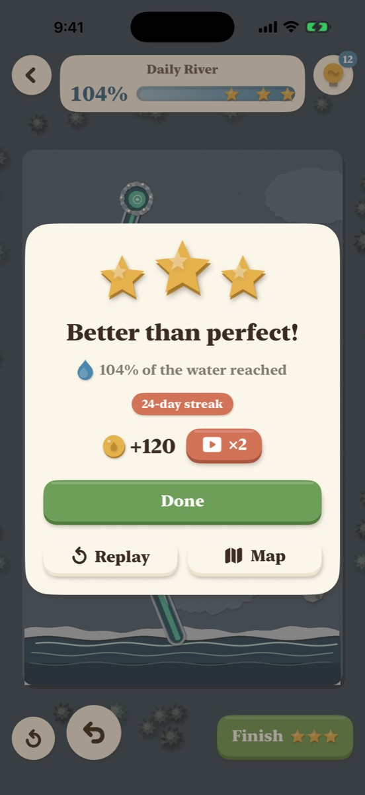

Every valley is a little paper diorama. Run your finger from the spring and the card opens up behind it, water rushing in to follow.
On the App Store soon


No grid and no tiles. The water chases your line as you draw, and undo costs nothing.
Each pond you pass joins in and the river swells. Longer routes find more water but lose some on the way, so the best line is a balance.
Terraced hills water can't climb, a limited reel of ink, sand, beaver dams, mills, thirsty villages, deltas and frozen springs.
One shared valley a day with a leaderboard and a streak, a different event each week, and endless valleys when you want more.